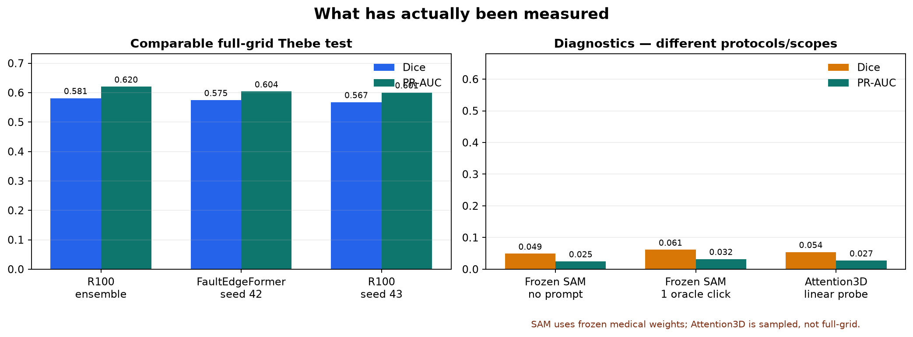
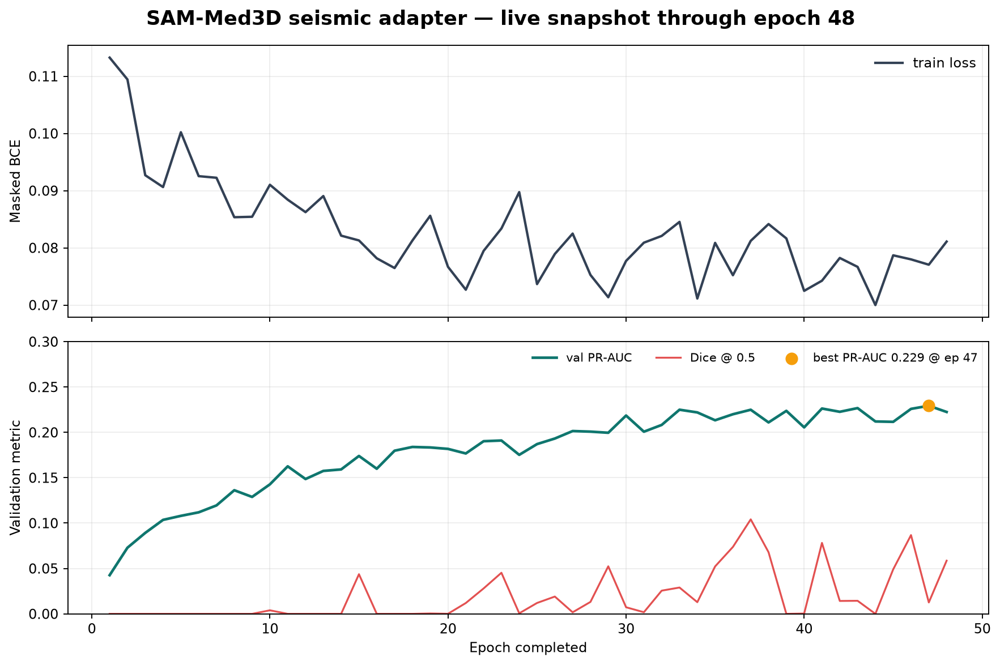
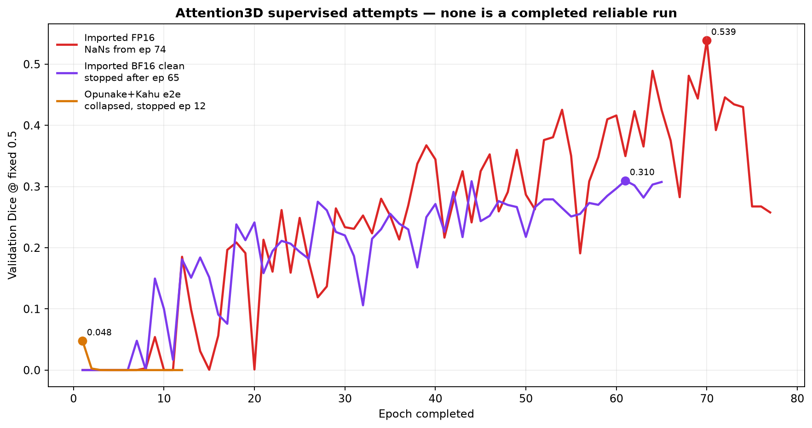
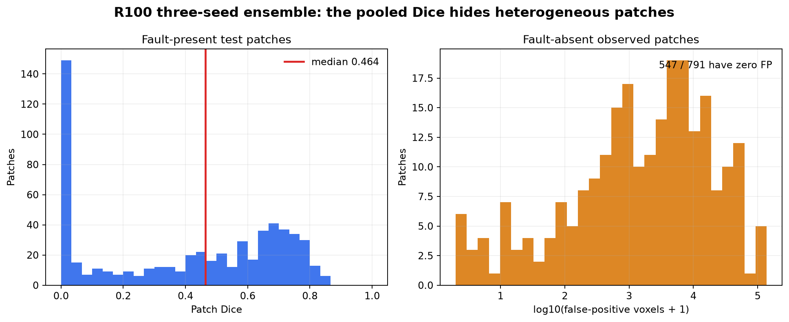
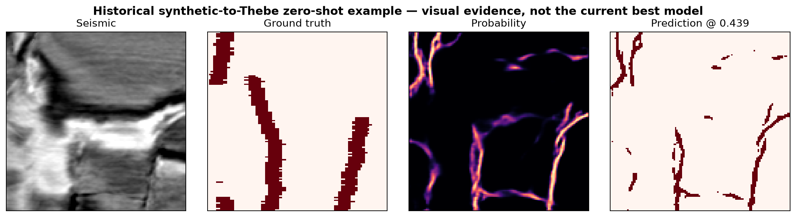
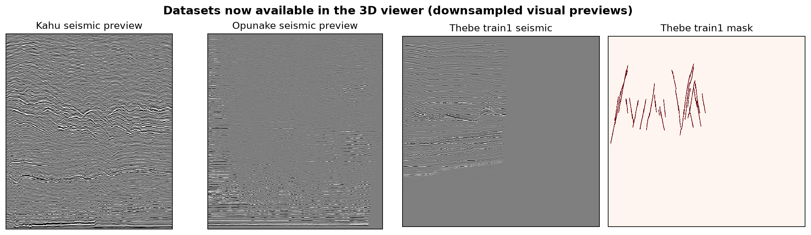

Comparable leaderboard
Full-grid results are separated from sampled and assisted diagnostics.


A visual, protocol-aware view of the Thebe fault-segmentation program. Published OIS/ODS claims are kept separate from the local pooled full-grid evaluator.
Finish SAM validation, freeze one evaluator, measure R100-5 inference controls, and cross-fit R100-5 + FaultEdgeFormer fusion. Then run SwinUNETR from scratch as a matched architecture control.
| Experiment | Status | Trustworthy result | Decision | Evidence |
|---|---|---|---|---|
| R100 3-seed ensemble | Complete + tested | Dice 0.5813 · PR-AUC 0.6203 | Frozen reference | report |
| R100 5-seed ensemble curve | Validation only | Dice 0.5973 validation | Optimize inference on validation, then freeze | report |
| FaultEdgeFormer seed 42 | Complete + tested | Dice 0.5746 · PR-AUC 0.6040 | Cache logits for fusion | report |
| Frozen SAM-Med3D | Negative control | Dice 0.0488 automatic | Do not reuse frozen features as a detector | report |
| SAM seismic adapter | Active | Best subset PR-AUC 0.2293 at epoch 47 | Finish complete validation; no test yet | plot |
| Attention3D field denoising | Complete pretext | MSE 0.00986 vs identity 0.03193 | Reconstruction evidence only | report |
| Attention3D linear probe | Sampled negative control | Dice 0.0542 · ROC-AUC 0.5095 | Not a full-grid leaderboard result | comparison |
| Attention3D FP16 / BF16 / pretrained e2e | Stopped / incomplete | NaNs, early stop, or collapse | Never resume unchanged | plot |
| SwinUNETR, nnU-Net, 2.5D, FaultSSL, TopSUMseg | Not implemented | No local run | Use ranked controlled queue | readiness table |
Full-grid results are separated from sampled and assisted diagnostics.

Ranking improves, while Dice at a fixed 0.5 threshold is poorly calibrated and unstable.

Three different supervised attempts ended without a reliable completed result.

Pooled Dice hides many hard or fault-free patches; structural review remains necessary.

A saved synthetic-to-Thebe zero-shot example. This is not the current best model.

Kahu, Opunake and Thebe train/validation masks are available as marked downsampled previews.

| Rank | Action | Training | Reason |
|---|---|---|---|
| 1 | Finish SAM complete validation | Already running | Close active work without contaminating test |
| 2 | Canonical evaluator and frozen manifest | No | Makes every later comparison defensible |
| 3 | R100-5 overlap/Gaussian; TTA separately | No | Highest information per compute |
| 4 | Cross-fitted R100-5 + FEF fusion | No | Tests complementary errors directly |
| 5 | Real-Thebe loss + foreground-sampling ablation | Low/moderate | Targets class imbalance in the actual domain |
| 6 | SwinUNETR S0 scratch control | High | Clean architecture comparison |
| 7 | 2.5D context and 3D nnU-Net baselines | Moderate/high | Strong dimensional/framework controls |
| 8 | SimMIM, joint student, structural loss | High | Research contributions after the controls |